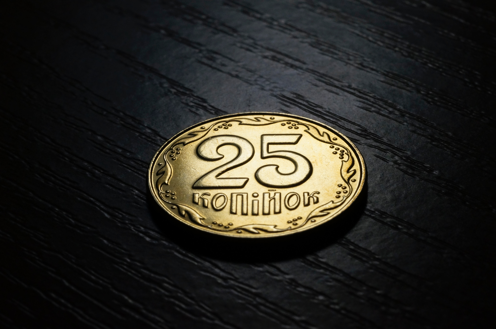

Etiam faucibus nulla sed hendrerit mollis. Aliquam vehicula lacus a nulla fringilla, ac fringilla mi posuere. Pellentesque vel elit ante. Praesent tempus velit nec libero mattis egestas. Vestibulum a purus mi. Mauris eget metus auctor, ultricies diam et, vestibulum ligula. Proin eget accumsan tortor.
From today's featured article
Vivamus tempus, quam non interdum imperdiet, nulla est hendrerit mi, nec finibus ipsum augue eget felis. Donec pulvinar, nulla vitae mattis vulputate, urna sapien varius sapien, et faucibus nibh lorem a augue. Etiam vel viverra velit. Sed faucibus lacinia lorem sit amet gravida. Pellentesque tristique tellus quam, non cursus justo ornare ac. Curabitur quis justo ex. Vivamus non ex in magna elementum luctus. Maecenas convallis ex nibh, a placerat turpis gravida malesuada. Donec eget bibendum tellus. Proin porttitor non neque a porttitor. Nunc sollicitudin urna augue, nec pretium sapien blandit at.
Did you know...

- ... that Frogmore Paper Mill (pictured) is the oldest surviving mechanical paper mill in the world?
- ... that Beerbohm, a cat owned by the Gielgud Theatre, became famous for entering actors' dressing rooms, attacking props, and wandering across the stage during performances?
- ... that photographer Evgenia Arbugaeva won the trust of a Siberian mammoth-tusk hunter by stitching up his injured hand?
- ... that Sam Hornish Jr. of Panther Racing won the 2002 Delphi Indy 300 by 0.0024 seconds, the closest margin of victory in Indy Racing League history?
- ... that despite John Fogerty's agreement with hippie generation political concerns, his lyrics for Creedence Clearwater Revival's "Don't Look Now (It Ain't You or Me)" were critical of hippie attitudes?
From today's featured article

- Hurricane Michael makes landfall in Florida, United States, as a Category 4 storm, after causing at least 13 deaths in Central America.
- The Intergovernmental Panel on Climate Change releases a report on actions urgently needed to confine global warming to 1.5 °C.
- The Nobel Memorial Prize in Economic Sciences is awarded to William Nordhaus and Paul Romer for integrating climate change and technological innovation, respectively, into "long-run macroeconomic analysis".
Did you know...

October 11: National Coming Out Day (international)
- 1142 – The Treaty of Shaoxing was ratified, ending the Jin–Song Wars, although sporadic fighting continued until 1234.
- 1311 – The peerage and clergy of the Kingdom of England published the Ordinances of 1311 to restrict King Edward II's powers.
- 1840 – Bashir Shihab II (pictured) surrendered to the Ottoman Empire and was removed as Emir of Mount Lebanon after an imperial decree by Sultan Abdülmecid I.
- 1950 – A field-sequential color system developed by Hungarian-American engineer Peter Goldmark became the first color television system to be adopted for commercial use, only for it to be abandoned a year later.
Today's featured picture
The Crown of the Andes is a votive crown originally made for a large statue of Mary, the mother of Jesus, in the cathedral of Popayán, Colombia. The oldest parts of the crown are the orb and cross at the top, which date to the 16th century. The diadem was made in approximately 1660, and the arches were added around a century later. The crown is adorned with 450 emeralds. The largest, the "Atahualpa Emerald", may have belonged to the Inca Emperor Atahualpa (1497–1533) and been seized from him when he was captured in 1532 by Francisco Pizarro, a Spanish conquistador. In 1936 the crown was sold by its owners to an American businessman. It is now in the collection of the Metropolitan Museum of Art in New York City.
Other areas of Wikipedia
- Community portal – Bulletin board, projects, resources and activities covering a wide range of Wikipedia areas.
- Help desk – Ask questions about using Wikipedia.
- Local embassy – For Wikipedia-related communication in languages other than English.
- Reference desk – Serving as virtual librarians, Wikipedia volunteers tackle your questions on a wide range of subjects.
- Site news – Announcements, updates, articles and press releases on Wikipedia and the Wikimedia Foundation.
- Village pump – For discussions about Wikipedia itself, including areas for technical issues and policies.
Wikipedia's sister projects
Wikipedia is hosted by the Wikimedia Foundation, a non-profit organization that also hosts a range of other projects: